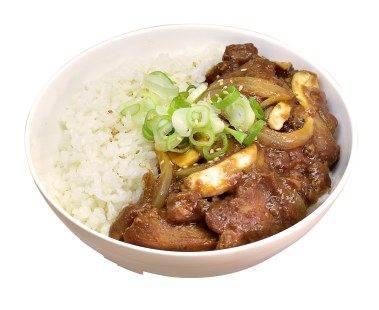
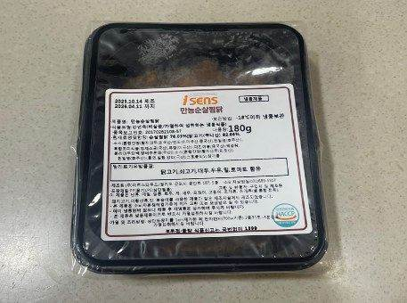
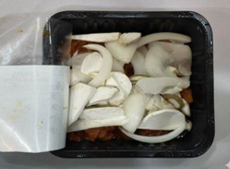
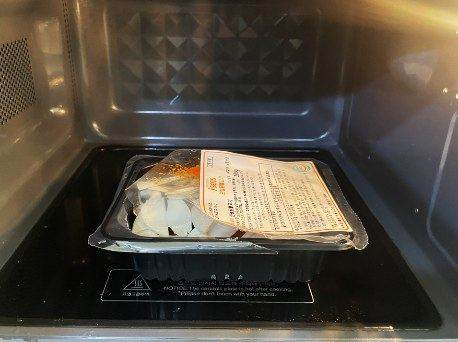
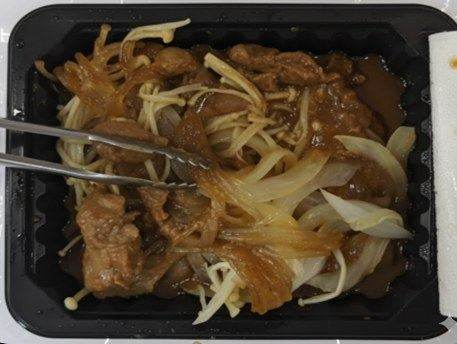
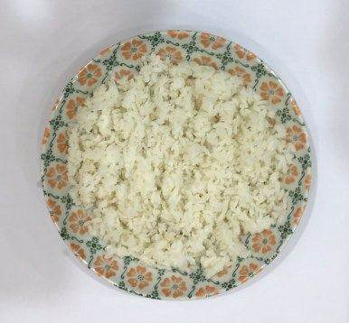
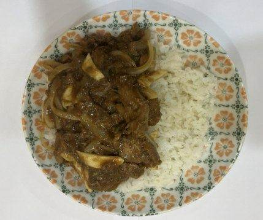
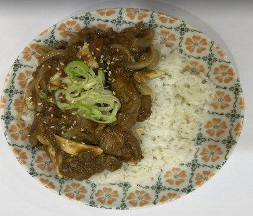
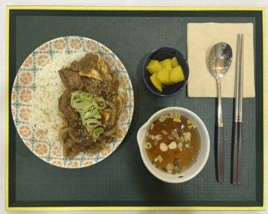

| 메뉴명 | 안동찜닭덮밥 |
|---|
| 판매가격 | 8,900원 |
|---|
| 원재료 | 아이센스 만능순살찜닭 원팩, 밥, 양파, 미니새송이, 대파, 깨 |
|---|
| 사용 부자재 | 덮밥접시, 소스볼 |
|---|
| 메뉴특징 | 진한 간장소스에 매콤함을 살짝 더해 감칠맛을 살린 순살찜닭덮밥 |
|---|
조리방법

1
냉동 아이센스 만능순살찜닭 제품의 실링 3면을 개봉한다.
(※완전히 뜯지 않기!)

2
양파슬라이스 20g, 미니새송이 20g을 계량하여 넣어준다.

3
700W전자레인지에서 3분간 돌려준다.

4
데워진 찜닭 윗면 포장을 뜯어 채소와 닭갈비를 골고루 섞어준다. (※화상 주의!)

5
접시에 밥 200g을 담아 넓게 펼쳐준다.

6
데운 찜닭을 밥이 보이도록 올려준다.

7
대파 4g, 깨를 뿌려 완성한다.

8
우동국물, 단무지와 함께 제공한다. (숟가락, 젓가락, 냅킨 제공)